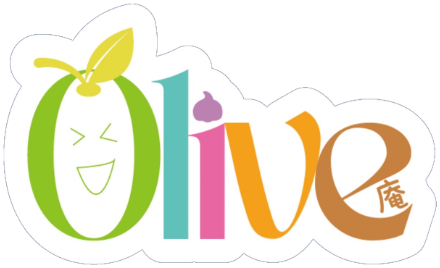

LINEやメールで届いたURLをタップして開きます。
https://olive-an.github.io/olive-anshift/次回から、すぐに開けるようになります。
①の欄に、フルネームで入力します。
②のカレンダーで、日付をタップするたびに記号が変わります。
③の「📎 控えを手元に残す」にある、どちらかのボタンを押します。
③の「送信」を押すと、確認の画面が出ます。内容を見て、もう一度「送信する」を押してください。
送信したあとでも、締切までは何度でも直せます。取り消しの手続きはいりません。
直すときは、②の「日付を選んでコメントを追加」の下にある
✏️ この内容を読み込んで直す
を押すと、前に送った内容が戻ってきます。直して、もう一度送信してください。
いちばん最後に送ったものが有効です。
分からないことがあれば、お気軽にお問合せください。